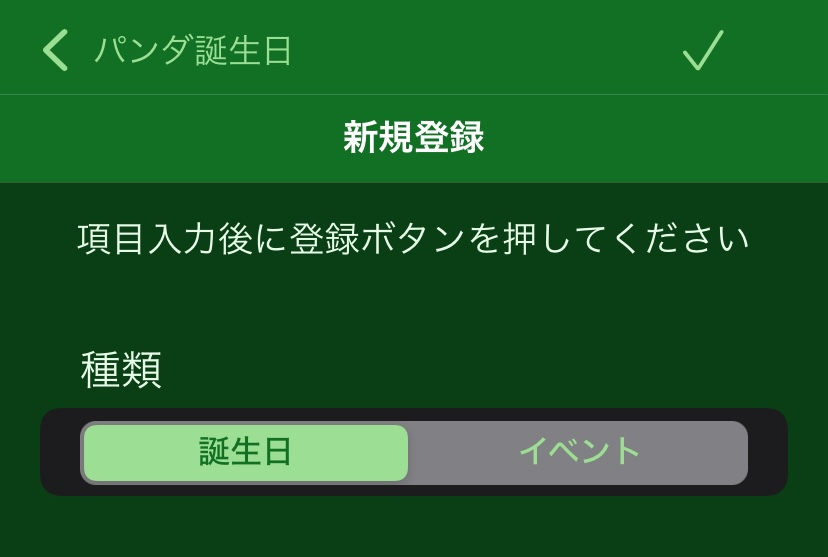
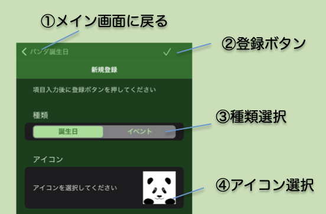

新規登録画面

- 新規登録画面ではユーザーが自分で好きな情報を登録できます。メイン画面でプラスボタンをタップして移動してきます。
- 名前以外の情報は後から追加・変更できます。
画面の説明

- ① アイコン (メイン画面に戻る）
- 情報登録をキャンセルしてメイン画面に戻ります。情報登録したい場合は②登録ボタンを押してください。
- ② 登録ボタン
- ページ内の情報を入力した後にこのボタンをタップして情報を登録します。情報が登録されたらメイン画面に戻ります。
- ③ 種類選択
- まず情報の種類を選択します。誕生日あるいはイベント（記念日など）のいずれかを選びます。誕生日を選んだ場合は入力項目に⑦性別選択と⑧種別選択が増えます。
- ④ アイコン選択
- メイン画面や詳細情報画面で表示されるアイコンを選びます。
- アイコン右下の✖️印をタップするとそのアイコンを削除できます。
- 画像追加を選ぶとアイコンを追加できます。登録済みアイコンから選ぶか、写真アルバムから選ぶことができます。
- 名前
- 情報を示す名前を入力します。既にある情報と同じ名前は登録できません。
- 誕生日/イベント日
- カレンダーを表示して年月日を選択します。
- 「通知をしない」を選ぶと、この日にちの何周年の通知を抑制できます。
- 性別
- 種類で誕生日を選んだ場合に表示されます。性別を選びます。
- 種別
- 種類で誕生日を選んだ場合に表示されます。人間もしくは他の動物の種別を選択します。パンダもしくは犬、猫を選んだ場合は、人間年齢に換算した年齢を詳細画面で表示できます。
- 両親/兄弟姉妹/パートナー/子供
- 種類で誕生日を選んだ場合に表示されます。追加ボタンを押して家族の名前を入力できます。
- 出生地
- 種類で誕生日を選んだ場合に表示されます。生まれたところを入力できます。
- 場所/現住地
- 現在いる場所もしくはイベントの場所を入力します。メイン画面で分類を「場所」をした場合に同じ場所がまとめられて表示されます。
- 関連情報リンク入力
- ネット上の関連情報のサイトにリンクしたいときにそのURLとタイトルを入力できます。追加ボタンを押してから、タイトルとURLを入力します。
- 削除したい時は左にドラッグして表示される削除ボタンを押して下さい。
- メモ入力
- メモを入力できます。「備考：」などのように「：」で始まる短い単語から始めると、詳細画面の「メモ：」を置き換えて表示できます。